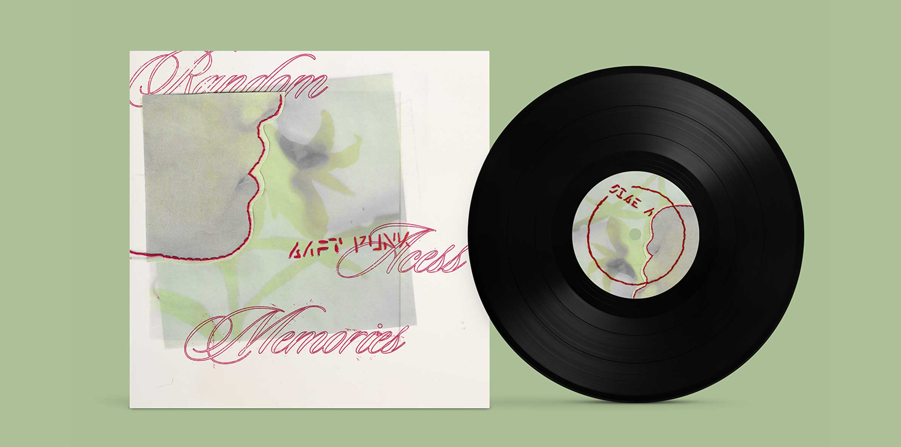
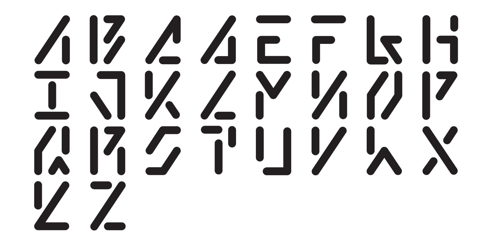
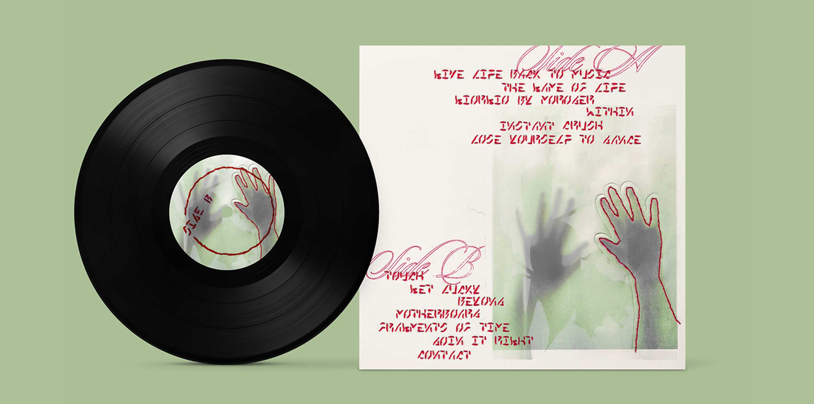
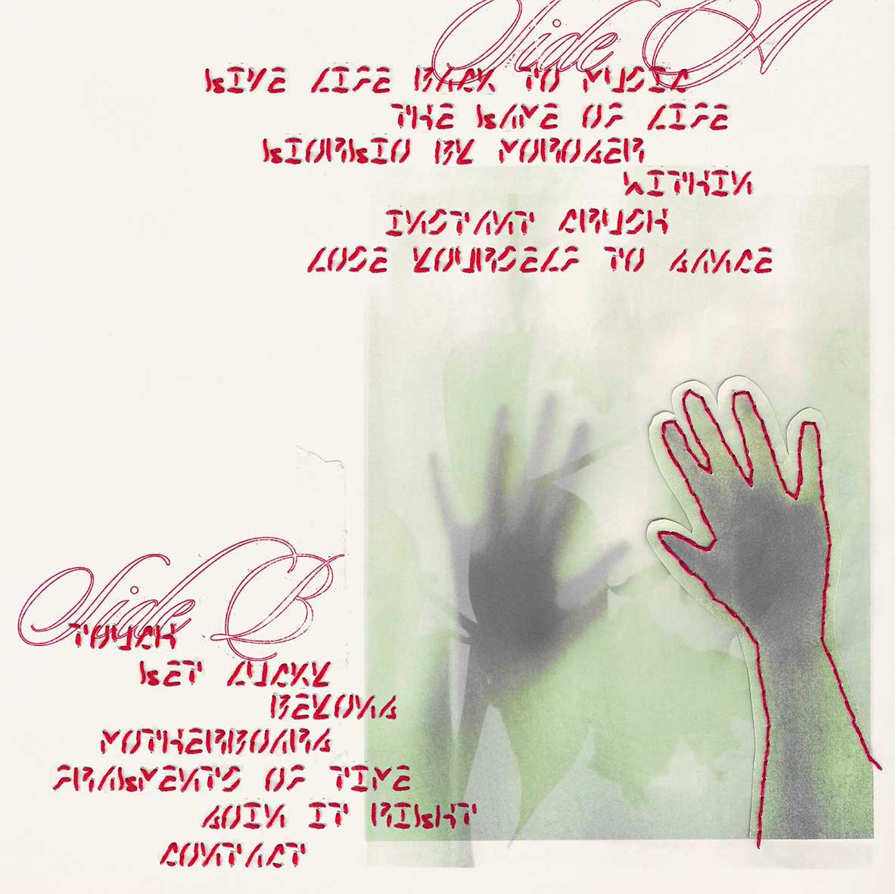

HOME
WORK
ARCHIVE
RESUME/CV
[08]
Daft Punk: Type Design
TYPOGRAPHY
DESCRIPTION
Random Access Memories is an album by Daft Punk with songs about love and friendship. Since the real album cover shows imagery of their iconic helmets delving into their techno genre, I decided to take a different path.
After listening to the album, specifically Instant Crush, a straight-edged, futuristic-type face was designed, originally following the technological undertones. As a way to break away from the energy of the music from a different perspective, the underlying message of the lyrics- a love that was lost- was focused on. Rather than a digital approach, the type was repurposed into stitching on a collage cover showing people who seemed close yet still just out of reach.
< BACK
NEXT >



